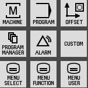
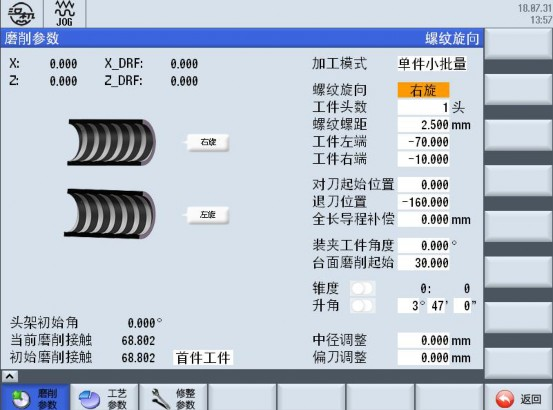
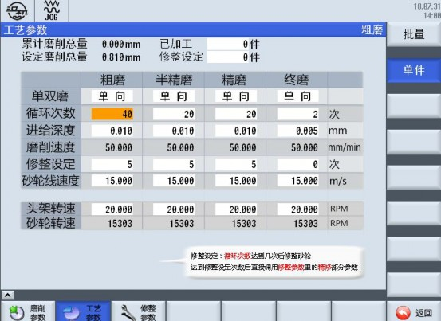
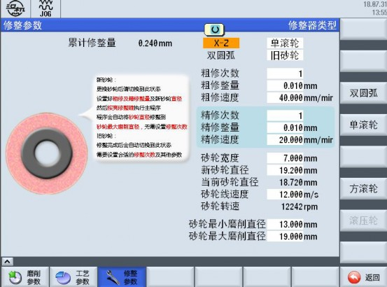
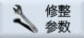
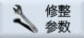
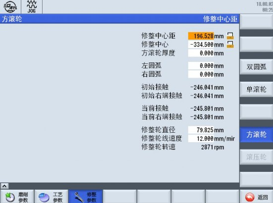
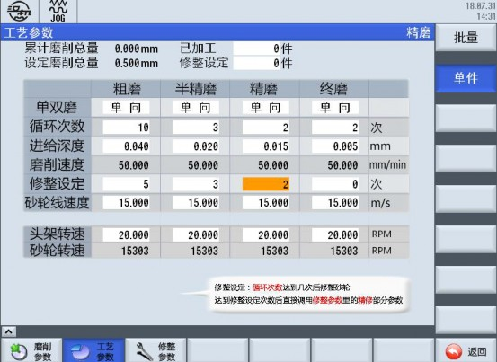
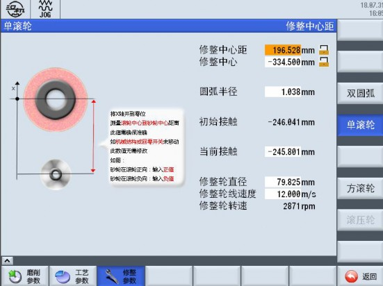
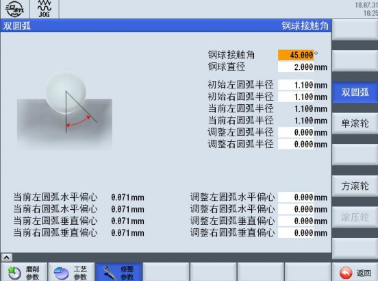

图 3-1
在图 3-1 机床系统控制区，按下 软键，即可进入用户界面首页（如图 3-2 所示）。
图 3-2
按下 软键，即进入查看该机床出厂的详细信息（如图
3-3 所示，图示内容仅供参考，以实物为准）。
图 3-3
按下返回键 ，返回用户界面首页。
按下
 软键，即进入磨削参数、工艺参数、修整参数设置界面（如图
3-4
红框内所示内容，图示内容仅供参考，以实物为准）。
软键，即进入磨削参数、工艺参数、修整参数设置界面（如图
3-4
红框内所示内容，图示内容仅供参考，以实物为准）。

图 3-4
按下 软键，默认首先进入“磨削参数”设置界面，显示效果如图 3-4 所示。
主要包括：
加工模式、螺纹旋向、工件头数、螺纹螺距、工件左端、工件右端、对刀起始位置、退刀位置、全程导程补偿、装夹工件角度、台面磨削起始、锥度、螺旋升角、中径调整、偏刀调整以及 X 轴及 Z 轴手轮偏置显示、还有砂轮当前磨削接触位、砂轮初始磨削接触位显示。
按下
 软键，再按下
软键，进入工艺参数设置界面如图
3-5
所示。
软键，再按下
软键，进入工艺参数设置界面如图
3-5
所示。

主要包括有：
图 3-5
界面工艺设置有粗磨、半精磨、精磨及终磨等四道工序，每道工序包含有单双磨、循环次数、进给深度、磨削速度、修整设定、砂轮线速度 . 还有累计磨削总量显示、设定磨削总量显示、磨削中头架转速显示及磨削中砂轮转速显示等。

按下 软键，再按下 软键，进入修整参数设置主界面首页，如图 3-6 所示。
图 3-6
如按一次返回键
 ，可返回用户界面首页。主要包括：
，可返回用户界面首页。主要包括：
单 / 方滚压轮选择、双圆弧齿型设置、新 / 旧砂轮选择、粗修次数、粗修整量、粗修速度、砂轮宽度、新砂轮直径、当前砂轮直径、砂轮转速、砂轮最小磨削直径、砂轮最大磨削直径。
文本框输入时，均有图片提示功能，输入前，请仔细阅读。
按下
 软键，再按下

软键，最后按下
软键，再按下

软键，最后按下
进入修整参数设置界面，如图 3-7 所示。
主要包括有：
图 3-7
修整中心距、修整中心、圆弧半径、当前接触点坐标、修整轮直径、修整轮旋转线速度、修整轮的转速 ( 自动计算 ) 。
按下
软键，再按下
 软键，最后按下
软键，最后按下
进入方滚轮参数设置界面，如图 3-7A 所示。

注：方滚轮部件为选件
图 3-7A
按下
 软键，再按下
软键，最后按下
软键，再按下
软键，最后按下
进入修整齿型（双圆弧）参数设置界面，如图 3-8 所示。

图 3-8
图 3-9 所示内容为磨削参数界面设置。
图 3-9
加工模式分为 与 两种模式：
说明：当被加工零件为批量工件时 ( 磨削量累计 ) ，应选择批量生产模式，反之，若被加工零件为单件小批量工件时 ( 磨削量不累计 ) ，则选择单件小批量模式。
缺省值：批量生产
参数输入范围：由生产模式决定
螺纹旋向功能分为 与 两种模
式：
说明：按照实际工件螺纹旋向选择，修改参数会改变螺纹旋向。缺省值：右旋
参数输入范围：由工件图纸确定，分左 / 右旋两种
说明：参数描述的是工件螺纹头数，修改参数会发生危险，应按照工件图纸进行设置。
缺省值： 1
参数输入范围： 1~99 由工件图纸确定
说明：参数描述的是工件螺纹螺距，修改参数会发生危险，应按照工件图纸进行设置。
缺省值：不小于 0
参数输入范围： >0~100 由工件图纸确定
说明：将工件安装于专用夹具体上，测量其回转精度，开动 Z 轴，并记录左、右端的坐标值。
缺省值： 0
参数要求：工件右端 > 工件左端
参数输入范围：根据实际坐标情况
说明：将工件安装于头架卡盘上，开动 X 轴，将砂轮移动到工件中心位置，并记录当前的 X 轴坐标值。
缺省值： 0
参数输入范围：根据实际坐标情况
说明：装夹工件角度是指 C 轴转到合适角度方便装加工件，以便保证螺纹起始位置的正确性。
缺省值： 0
参数输入范围： 0~360
说明：工作台开至工件螺纹外，合适的位置缺省值： 0
参数输入范围：根据实际坐标情况
说明：当被加工零件有锥度时，选择到此按钮，打开锥度开关输入参数即可，例如： 。
缺省值： 0:000
参数输入范围：由工件图纸确定，分子输入负值为倒锥。 1-10、退刀位置
说明：加工结束后X 轴后退到一个安全的位置。缺省值： 0
参数输入范围：根据实际坐标情况 1-11、螺旋升角
说明：根据螺纹中径和螺纹导程计算得到的角度。缺省值： 0
参数输入范围：根据实际情况 1-12、中径调整
说明：根据磨削后测量结果，微调中径尺寸缺省值： 0
参数输入范围：根据实际情况 1-13、偏刀调整
说明：磨削后如果偏刀，根据处理结果调整此值。缺省值： 0
参数输入范围：根据实际情况
进入 3-10 图示界面内容中，进行工艺参数界面设置。图中输入
的数值为示范参数。

图 3-10
请根据被加工工件的特征，在图 3-10 所示的参数框内，输入相应数值。
说明：即单向磨削与双向磨削。缺省值：单向磨削
参数输入范围：由工件磨削部位长短决定
说明：循环次数是指磨削时，每道工序的磨削循环次数。缺省值： 0
参数输入范围：由被加工件的余量决定
说明：进给深度是指磨削时，每道工序的磨削进给量，根据被加工工件的余量，合理安排。
缺省值： 0
参数输入范围： 0~0.1
说明：磨削速度是指每道工序的磨削时，接触工件的瞬时速度，根据被加工工件的余量、材质，砂轮的粒度等，合理安排。
缺省值： 0
参数输入范围： 0~300 推荐值： 100
说明：修整设定是指磨削时，每道工序的磨削完成后，是否修整，不修整此值为 0 ，若需要修整可以适当设定修整次数。例如：修整设定值为 2 时，是指每磨削循环 2 次后进入修整，具体的修整参数请观察修整主界面的精修各参数。
缺省值： 0
参数输入范围：由砂轮材质及磨削时长决定
说明：砂轮线速度是指每道工序的磨削时，设定的砂轮实时线速度。此参数与磨削速度相互匹配。
缺省值： 0
参数输入范围： 10~40 推荐值： 20
说明：头架转速是指当前工序的磨削时，用户需要设定的磨削头架转速。
缺省值： 0
参数输入范围： >0
推荐值：此参数与磨削速度有关。
说明：砂轮转速是指当前工序的磨削时，用户需要设定的磨削砂轮转速。
缺省值： 0
参数输入范围： >0
推荐值：此参数与砂轮直径有关，程序自动计算用户不需设置。
说明：加工内螺纹时，将砂轮直径测量后填写到此。
进入 3-11 图示界面内容中，图中输入的数值为示范参数。
图 3-11
说明：初次设置为选择新砂轮 / 旧砂轮，选定后注意查看左侧图片提示信息。
缺省值：新砂轮
说明：是指粗修循环次数缺省值： 0
参数输入范围：由齿型参数决定
说明：砂轮粗修时的进刀量缺省值： 0
参数输入范围： 0~0.05 推荐值： 0.02
说明：砂轮粗修时的进给速度缺省值： 0
参数输入范围： 0~150 推荐值： 100
说明：是指精修循环次数缺省值： 0
参数输入范围：由砂轮决定
说明：砂轮精修时的进刀量缺省值： 0
参数输入范围： 0~0.02 推荐值： 0.01
说明：砂轮精修时的进给速度缺省值： 0
参数输入范围： 0~150 推荐值： 100
说明：新砂轮直径是指安装在当前轴上的新砂轮直径缺省值： 0
参数输入范围： 0~500 推荐值：
说明：当前砂轮直径是指安装在当前轴上的砂轮直径缺省值： 0
参数输入范围：无需输入，程序自动计算
说明：砂轮转速是指安装在当前轴上的砂轮当前转速值缺省值： 0
参数输入范围：无需输入程序自动计算、与砂轮直径及砂轮线速度有关
说明：砂轮线速度是指安装在当前轴上的砂轮线速度缺省值： 0
参数输入范围： >0
说明：砂轮最小磨削直径是指安装在当前轴上的砂轮最小磨削直
径
缺省值： 0
参数输入范围： >0 需手动输入
说明：砂轮最大磨削直径是指安装在当前轴上的砂轮最大磨削直
径
缺省值： 0
参数输入范围： >0 需手动输入
进入 3-12 图示界面内容中，图中输入的数值为示范参数。

图 3-12
说明：砂轮架 (X 轴 ) 回参考点时，滚压轮中心轴线到修整轮中心轴线的距离。
缺省值： 0
参数输入范围： >0 需手动输入
说明：砂轮中心轴线与修整轮中心轴线重合时的 Z 坐标值。
缺省值： 0
参数输入范围： >0 需手动输入
说明：修整轮的修整圆弧半径值，根据滚压轮定做的实际测量参数输入。
缺省值： 0
参数输入范围： >0 需手动输入
说明：新砂轮时，砂轮外圆与修整轮外圆接触处的 X 坐标值。缺省值： 0
参数输入范围： >0 需手动输入
说明：旧砂轮时，砂轮外圆与修整轮外圆接触处的 X 坐标值。当设置为新砂轮时，该值自动设置为初始接触值。
缺省值： 0
参数输入范围： >0 需手动输入
说明：修整轮的最大外圆直径。根据滚压轮定做时的测量数据输
入。
缺省值： 0
参数输入范围： >0 需手动输入
说明：根据经验输入砂轮修整时的线速度。缺省值： 10
参数输入范围： >0 需手动输入
说明：根据修整轮外圆直径和修整轮的设定线速度，自动计算修整轮的转速。
缺省值： 0
参数输入范围：自动计算
进入 3-13 图示界面内容中，图中输入的数值为示范参数。

图 3-13
说明：根据实际加工齿型要求输入参数。按图纸上尺寸选取。缺省值： 0
参数输入范围：手动输入
说明：根据实际加工齿型输入参数。按图纸上测量钢球尺寸选取。缺省值： 0
参数输入范围：手动输入
说明：根据实际加工齿型输入参数。按图纸上尺寸选取。缺省值： 0
参数输入范围：手动输入
说明：根据实际加工后齿型误差输入参数。缺省值： 0
参数输入范围：手动输入
说明：根据实际加工后齿型误差输入参数。缺省值： 0
参数输入范围：手动输入
说明：根据实际齿型参数设置值，自动计算产生。缺省值： 0
参数输入范围：自动计算
说明：根据实际齿型参数设置值，自动计算产生。
缺省值： 0
参数输入范围：自动计算
进入 3-14 图示界面内容中，图中输入的数值为示范参数。
图 3-14
说明：砂轮架 (X 轴 ) 回参考点时，滚压轮中心轴线到修整轮中心轴线的距离。
缺省值： 0
参数输入范围： >0 需手动输入
说明：砂轮中心轴线与修整轮中心轴线重合时的 Z 坐标值。缺省值： 0
参数输入范围： >0 需手动输入
说明：方滚轮的厚度尺寸。根据实际定做方滚轮的测量数据输入。缺省值： 0
参数输入范围： >0 需手动输入
说明：方滚轮的左侧修整圆弧半径、右侧修整圆弧半径值，根据滚压轮定做的实际测量参数输入。
缺省值： 0
参数输入范围： >0 需手动输入
说明：新砂轮时，砂轮外圆与修整轮外圆接触处的 X 坐标值。以方滚轮的右端接触为基准点。
缺省值： 0
参数输入范围： >0 需手动输入
说明：旧砂轮时，砂轮外圆与修整轮外圆接触处的 X 坐标值。以方滚轮的右端接触为基准点。当设置为新砂轮时，该值自动设置为初始接触值。
缺省值： 0
参数输入范围： >0 需手动输入
说明：修整轮的最大外圆直径。根据滚压轮定做时的测量数据输入。
缺省值： 0
参数输入范围： >0 需手动输入
说明：根据经验输入砂轮修整时的线速度。缺省值： 10
参数输入范围： >0 需手动输入
说明：根据修整轮外圆直径和修整轮的设定线速度，自动计算修整轮的转速。
缺省值： 0
参数输入范围：自动计算